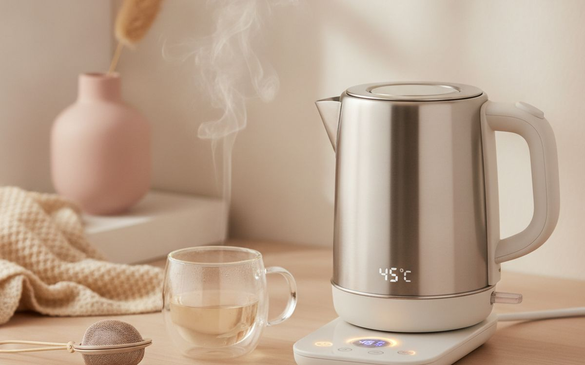
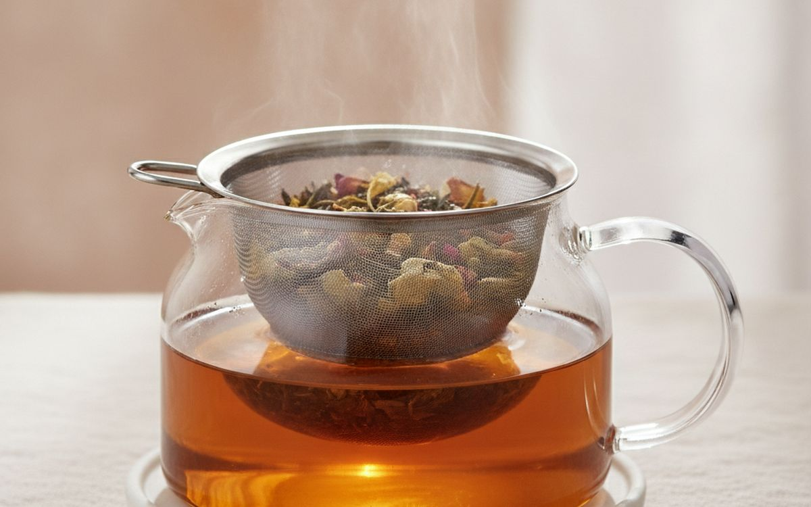
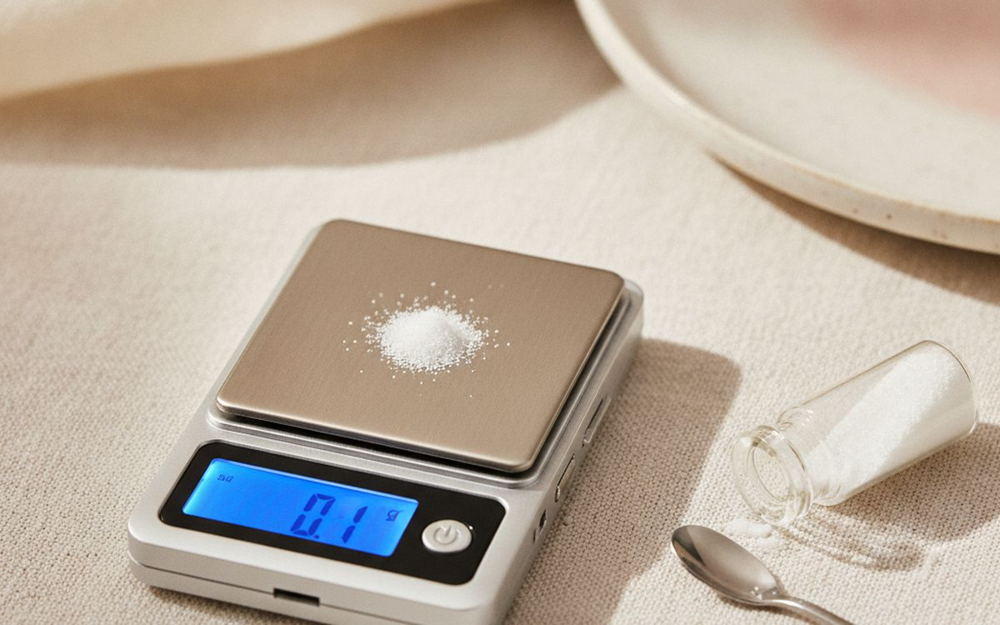
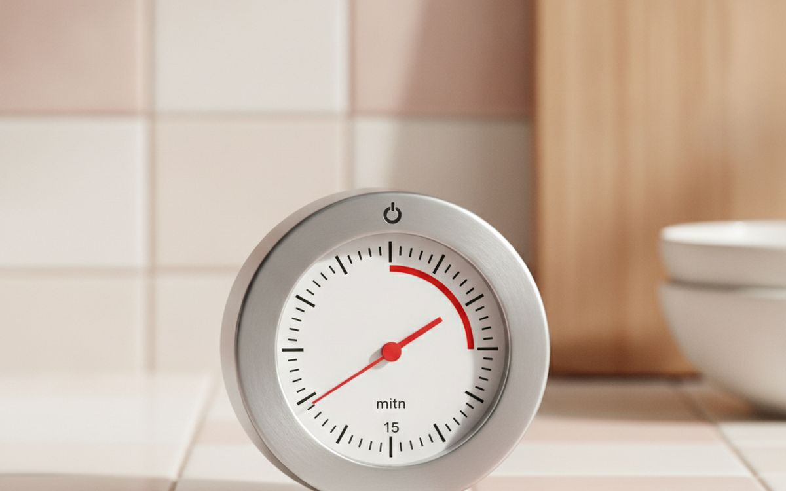
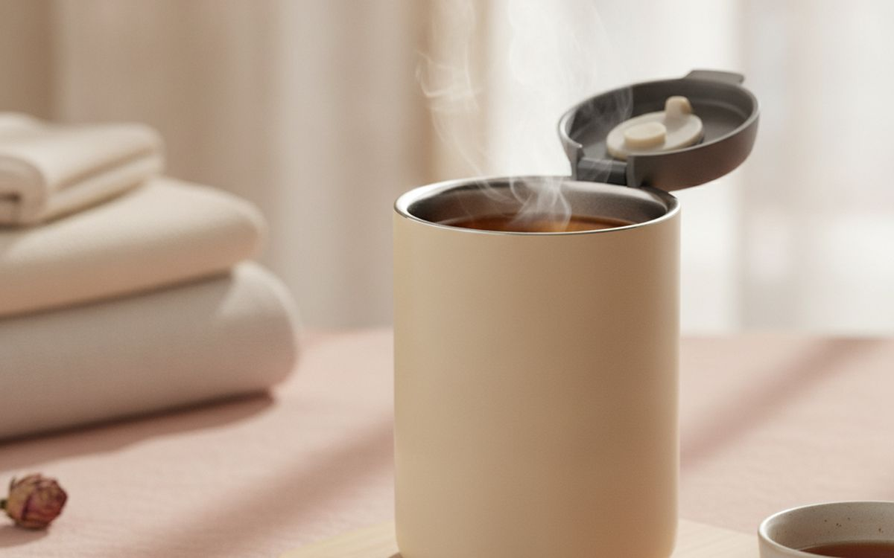
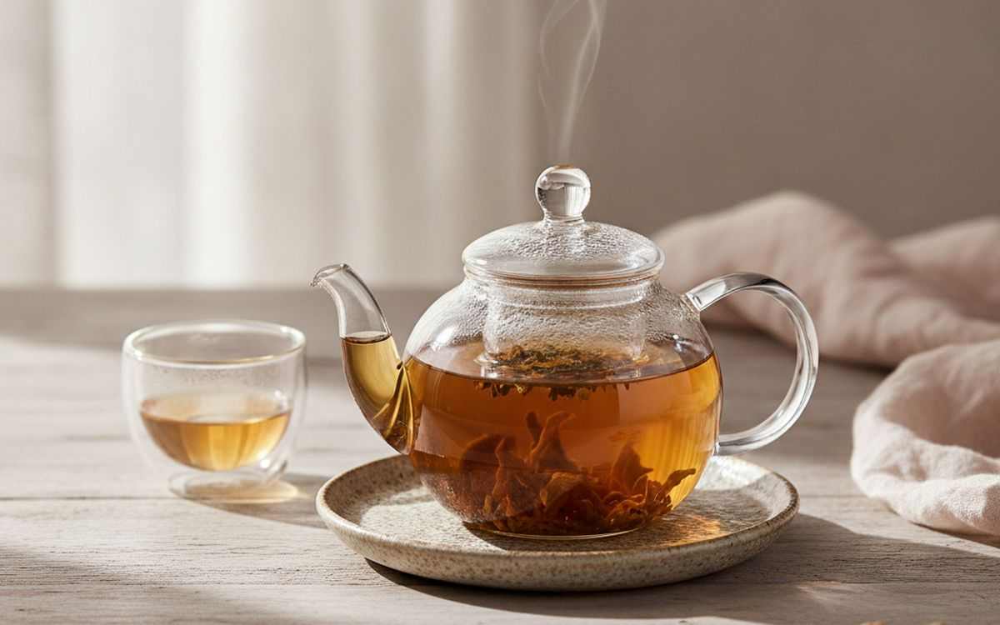
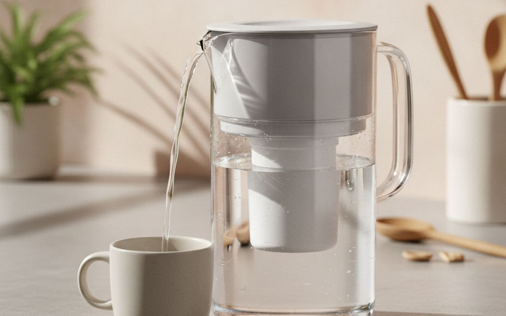
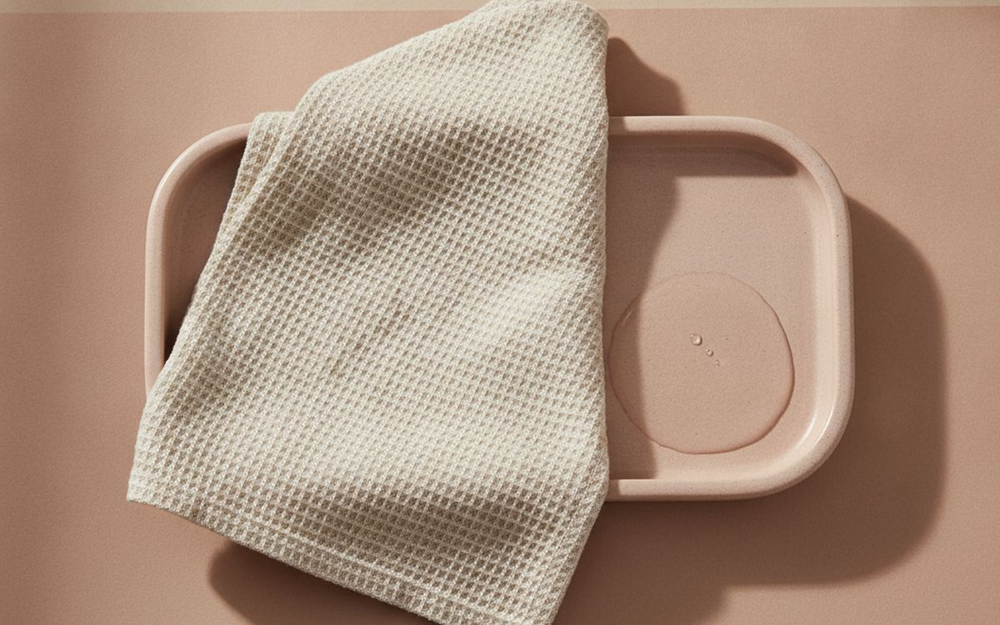
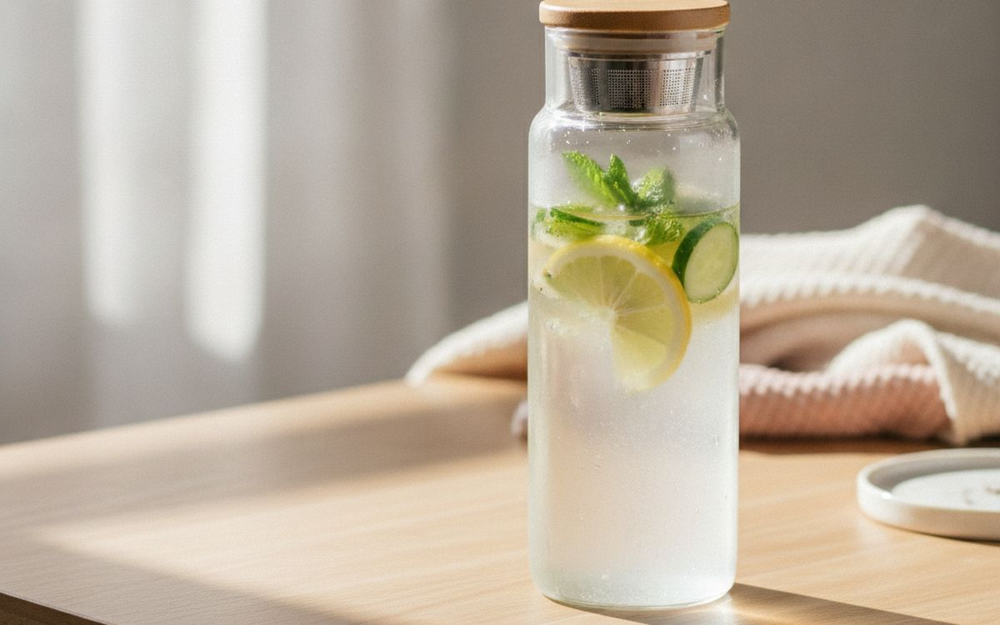

Control water, leaf and time. That sounds simple, but this category attracts products designed to photograph well rather than work well. The useful test is whether an item solves a repeated problem, lasts long enough to justify its price, and remains easy to live with after the first week.
This guide concentrates on those practical gains. We favour understandable products over feature lists, repairable or replaceable parts over sealed novelty, and a modest item used every week over an impressive one left in a cupboard. Prices are approximate at the time of writing and change often.
One honest limit: these are researched buying recommendations based on specifications, established safety guidance where relevant, and long-run owner patterns. They are not claims that every model has been personally tested. Fit, taste and individual needs remain personal, and where that matters we say so.
En resumen
A temperature-control kettle
THE PLACE TO START
Aviso. Los enlaces de esta página son de afiliados. Si compras a través de uno podemos ganar una comisión sin coste adicional para ti. No influye en qué entra en esta lista ni en su orden.
Cómo lo elegimos
We looked for products that solve a clear problem, are easy to understand and maintain, and have enough useful life to beat a cheaper disposable alternative. We checked materials, dimensions and the return policy, gave extra weight to warranties and common replacement parts, and marked the compromises instead of hiding them.
De un vistazo
Los precios son aproximados en el momento de escribir y cambian a menudo.
Las recomendaciones

01 · THE PLACE TO STARTA temperature-control kettle
A temperature-control kettle earns a place because it addresses a specific, recurring problem instead of inventing a new routine. The best version is usually the one with straightforward controls, sensible construction and no unnecessary subscription or proprietary accessory. Before buying, check materials, dimensions and the return policy. A good listing should make those details clear; vague measurements and promises without specifications are a reason to move on. The case for it: solves a repeat problem rather than a one-off inconvenience, available in simple versions without paying for decorative extras, and easy to compare on useful specifications. The trade-off is real: quality varies sharply by maker and measure the space, check compatibility and read the return terms before ordering, so weigh that against how often it would actually get used.
$15–40Lo que aceptas: Quality varies sharply by maker
Por qué está aquí
- Solves a repeat problem rather than a one-off inconvenience
- Available in simple versions without paying for decorative extras
- Easy to compare on useful specifications
Conviene saber
- Quality varies sharply by maker
- Measure the space, check compatibility and read the return terms before ordering

02 · THE EVERYDAY UPGRADEA roomy basket infuser
A roomy basket infuser earns a place because it addresses a specific, recurring problem instead of inventing a new routine. The best version is usually the one with straightforward controls, sensible construction and no unnecessary subscription or proprietary accessory. Before buying, check the warranty and availability of replacement parts. A good listing should make those details clear; vague measurements and promises without specifications are a reason to move on. The case for it: solves a repeat problem rather than a one-off inconvenience, available in simple versions without paying for decorative extras, and easy to compare on useful specifications. The trade-off is real: check dimensions before ordering and measure the space, check compatibility and read the return terms before ordering, so weigh that against how often it would actually get used.
$25–70Lo que aceptas: Check dimensions before ordering
Por qué está aquí
- Solves a repeat problem rather than a one-off inconvenience
- Available in simple versions without paying for decorative extras
- Easy to compare on useful specifications
Conviene saber
- Check dimensions before ordering
- Measure the space, check compatibility and read the return terms before ordering

03 · SMALL CHANGE, REAL GAINA 0.1g pocket scale
A 0.1g pocket scale earns a place because it addresses a specific, recurring problem instead of inventing a new routine. The best version is usually the one with straightforward controls, sensible construction and no unnecessary subscription or proprietary accessory. Before buying, check whether the controls are easy to use. A good listing should make those details clear; vague measurements and promises without specifications are a reason to move on. The case for it: solves a repeat problem rather than a one-off inconvenience, available in simple versions without paying for decorative extras, and easy to compare on useful specifications. The trade-off is real: the cheapest version is rarely the best value and measure the space, check compatibility and read the return terms before ordering, so weigh that against how often it would actually get used.
$40–120Lo que aceptas: The cheapest version is rarely the best value
Por qué está aquí
- Solves a repeat problem rather than a one-off inconvenience
- Available in simple versions without paying for decorative extras
- Easy to compare on useful specifications
Conviene saber
- The cheapest version is rarely the best value
- Measure the space, check compatibility and read the return terms before ordering

04 · BUILT FOR REPEAT USEA simple kitchen timer
A simple kitchen timer earns a place because it addresses a specific, recurring problem instead of inventing a new routine. The best version is usually the one with straightforward controls, sensible construction and no unnecessary subscription or proprietary accessory. Before buying, check independent owner reports after six months or more. A good listing should make those details clear; vague measurements and promises without specifications are a reason to move on. The case for it: solves a repeat problem rather than a one-off inconvenience, available in simple versions without paying for decorative extras, and easy to compare on useful specifications. The trade-off is real: needs occasional cleaning or maintenance and measure the space, check compatibility and read the return terms before ordering, so weigh that against how often it would actually get used.
$60–180Lo que aceptas: Needs occasional cleaning or maintenance
Por qué está aquí
- Solves a repeat problem rather than a one-off inconvenience
- Available in simple versions without paying for decorative extras
- Easy to compare on useful specifications
Conviene saber
- Needs occasional cleaning or maintenance
- Measure the space, check compatibility and read the return terms before ordering

05 · THE VALUE PICKAn insulated tea mug
An insulated tea mug earns a place because it addresses a specific, recurring problem instead of inventing a new routine. The best version is usually the one with straightforward controls, sensible construction and no unnecessary subscription or proprietary accessory. Before buying, check the total size once it is stored. A good listing should make those details clear; vague measurements and promises without specifications are a reason to move on. The case for it: solves a repeat problem rather than a one-off inconvenience, available in simple versions without paying for decorative extras, and easy to compare on useful specifications. The trade-off is real: takes up some storage space and measure the space, check compatibility and read the return terms before ordering, so weigh that against how often it would actually get used.
$20–55Lo que aceptas: Takes up some storage space
Por qué está aquí
- Solves a repeat problem rather than a one-off inconvenience
- Available in simple versions without paying for decorative extras
- Easy to compare on useful specifications
Conviene saber
- Takes up some storage space
- Measure the space, check compatibility and read the return terms before ordering

06 · FOR THE REGULAR USERA small glass teapot
A small glass teapot earns a place because it addresses a specific, recurring problem instead of inventing a new routine. The best version is usually the one with straightforward controls, sensible construction and no unnecessary subscription or proprietary accessory. Before buying, check whether consumables are proprietary. A good listing should make those details clear; vague measurements and promises without specifications are a reason to move on. The case for it: solves a repeat problem rather than a one-off inconvenience, available in simple versions without paying for decorative extras, and easy to compare on useful specifications. The trade-off is real: not every household needs one and measure the space, check compatibility and read the return terms before ordering, so weigh that against how often it would actually get used.
$80–250Lo que aceptas: Not every household needs one
Por qué está aquí
- Solves a repeat problem rather than a one-off inconvenience
- Available in simple versions without paying for decorative extras
- Easy to compare on useful specifications
Conviene saber
- Not every household needs one
- Measure the space, check compatibility and read the return terms before ordering

07 · KEEP IT SIMPLEA water-filter jug
A water-filter jug earns a place because it addresses a specific, recurring problem instead of inventing a new routine. The best version is usually the one with straightforward controls, sensible construction and no unnecessary subscription or proprietary accessory. Before buying, check the weight and how it will be carried. A good listing should make those details clear; vague measurements and promises without specifications are a reason to move on. The case for it: solves a repeat problem rather than a one-off inconvenience, available in simple versions without paying for decorative extras, and easy to compare on useful specifications. The trade-off is real: returns can be awkward and measure the space, check compatibility and read the return terms before ordering, so weigh that against how often it would actually get used.
$12–35Lo que aceptas: Returns can be awkward
Por qué está aquí
- Solves a repeat problem rather than a one-off inconvenience
- Available in simple versions without paying for decorative extras
- Easy to compare on useful specifications
Conviene saber
- Returns can be awkward
- Measure the space, check compatibility and read the return terms before ordering

08 · LESS CLUTTER, MORE USEAn airtight tea tin
An airtight tea tin earns a place because it addresses a specific, recurring problem instead of inventing a new routine. The best version is usually the one with straightforward controls, sensible construction and no unnecessary subscription or proprietary accessory. Before buying, check how easily it can be cleaned. A good listing should make those details clear; vague measurements and promises without specifications are a reason to move on. The case for it: solves a repeat problem rather than a one-off inconvenience, available in simple versions without paying for decorative extras, and easy to compare on useful specifications. The trade-off is real: a simpler version may work just as well and measure the space, check compatibility and read the return terms before ordering, so weigh that against how often it would actually get used.
$30–90Lo que aceptas: A simpler version may work just as well
Por qué está aquí
- Solves a repeat problem rather than a one-off inconvenience
- Available in simple versions without paying for decorative extras
- Easy to compare on useful specifications
Conviene saber
- A simpler version may work just as well
- Measure the space, check compatibility and read the return terms before ordering

09 · THE SPECIALIST OPTIONA tea towel and drip tray
A tea towel and drip tray earns a place because it addresses a specific, recurring problem instead of inventing a new routine. The best version is usually the one with straightforward controls, sensible construction and no unnecessary subscription or proprietary accessory. Before buying, check the stated safety standard and instructions. A good listing should make those details clear; vague measurements and promises without specifications are a reason to move on. The case for it: solves a repeat problem rather than a one-off inconvenience, available in simple versions without paying for decorative extras, and easy to compare on useful specifications. The trade-off is real: availability changes quickly and measure the space, check compatibility and read the return terms before ordering, so weigh that against how often it would actually get used.
$50–150Lo que aceptas: Availability changes quickly
Por qué está aquí
- Solves a repeat problem rather than a one-off inconvenience
- Available in simple versions without paying for decorative extras
- Easy to compare on useful specifications
Conviene saber
- Availability changes quickly
- Measure the space, check compatibility and read the return terms before ordering

10 · THE USEFUL EXTRAA travel infuser bottle
A travel infuser bottle earns a place because it addresses a specific, recurring problem instead of inventing a new routine. The best version is usually the one with straightforward controls, sensible construction and no unnecessary subscription or proprietary accessory. Before buying, check whether it replaces something you already own. A good listing should make those details clear; vague measurements and promises without specifications are a reason to move on. The case for it: solves a repeat problem rather than a one-off inconvenience, available in simple versions without paying for decorative extras, and easy to compare on useful specifications. The trade-off is real: the benefit depends on using it consistently and measure the space, check compatibility and read the return terms before ordering, so weigh that against how often it would actually get used.
$10–45Lo que aceptas: The benefit depends on using it consistently
Por qué está aquí
- Solves a repeat problem rather than a one-off inconvenience
- Available in simple versions without paying for decorative extras
- Easy to compare on useful specifications
Conviene saber
- The benefit depends on using it consistently
- Measure the space, check compatibility and read the return terms before ordering
Preguntas frecuentes
Should I buy the cheapest option?
Usually not. The bottom of a category often saves money by using weaker fittings, shorter warranties or parts that cannot be replaced. The right target is the simplest product that meets the real need, not the lowest visible price.
When is the best time to buy?
Watch the normal price for a few weeks if the purchase is not urgent. A percentage badge is not evidence of a deal. Compare the exact model number, shipping cost, warranty and return fee before deciding.
Is used or refurbished reasonable?
Often, especially for durable goods with parts you can inspect. Avoid used safety equipment, hygiene-sensitive products and anything with hidden battery wear unless it comes with testing, a meaningful warranty and an easy return route.
What should I check when it arrives?
Open it within the return window. Confirm dimensions and included parts, inspect for damage, test every control, and keep the packaging until you know it works in the place and routine you bought it for.
Ofertas de hoy
Mira qué está rebajado ahora mismo.
Ofertas →← Todas las guías
Como afiliados de AliExpress, ganamos por las compras que cumplen los requisitos. Los precios y la disponibilidad son correctos en la fecha de publicación y pueden cambiar.